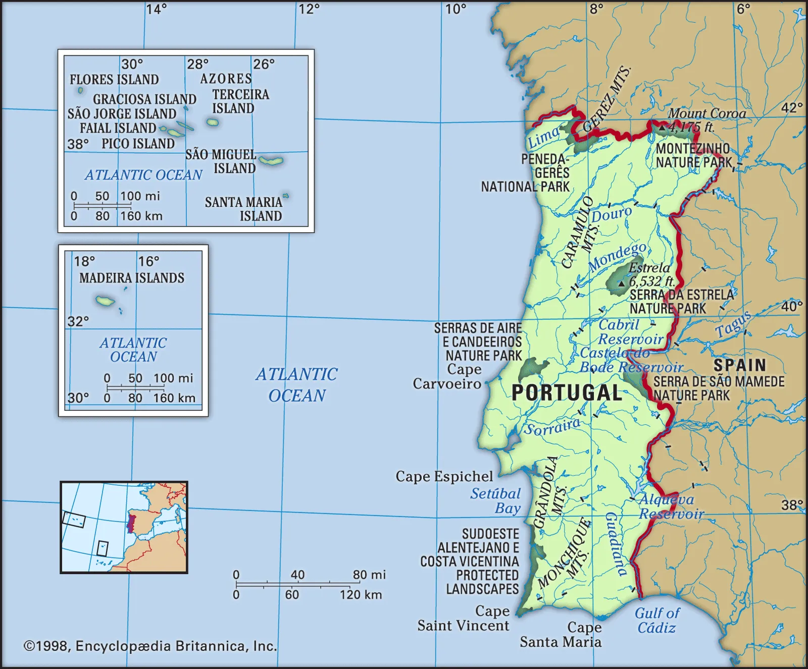
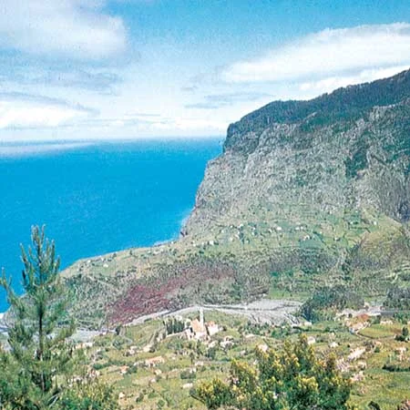

Ponta Delgada, city and concelho (municipality), capital of the região autónoma (autonomous region) of the Azores archipelago of Portugal in the North Atlantic Ocean. It is located on the southern coast of São Miguel Island.
Avenue Infante Henrique along the harbour at Ponta Delgada, Azores
The city, the largest in the Azores, became São Miguel’s second capital (Vila Franca do Campo was the first) in 1540. It was severely damaged in 1839 by a tidal wave and was subsequently rebuilt.
The Holy Christ of the Miracles Church is a noted place of pilgrimage. A mild climate and lush vegetation have made the city an important year-round tourist resort. Its harbour has a breakwater nearly 1 mile (1.6 km) long and serves as a fueling supply station and offers minor repair facilities to transatlantic ships. Ponta Delgada is the Azores’ leading commercial centre, exporting pineapples, oranges, tea, wine, cereals, vegetables, and dairy products. Sugar refining and liquor distilling, as well as tourism, are the primary components of its economy.
The University of the Azores was founded in the city in 1976. There is regular interisland airline service and connections with mainland Portugal. Shipping lines handle sea trade with continental Portugal, northern Europe, and the United States. Pop. (2001) city, 46,102; mun., 65,854; (2011 est.) city, 48,200; (2011) mun., 68,809.
São Miguel Island
island, Portugal
São Miguel Island, Portuguese Ilha de São Miguel, island, largest of the Azores archipelago of Portugal, in the North Atlantic Ocean. It is situated about 740 miles (1,190 km) west of Cape Roca on Portugal’s west coast.
São Miguel Island, Azores
Volcanic crater near Cruz Peak, São Miguel Island, Azores.
São Miguel is up to 40 miles (65 km) long and 9 miles (15 km) wide and has an area of 293 square miles (759 square km). The island is volcanic in origin, with peaks culminating in Vara Peak, 3,570 feet (1,105 metres) above sea level. The island has been devastated by nearly a dozen earthquakes and eruptions since the 15th century.
São Miguel, now a major tourist resort, is also a producer of fruits (especially pineapples), tea, wine, tobacco, cereals, meat, and dairy products. Its largest city, Ponta Delgada, is the capital of the Azores autonomous region. Other important settlements are the resort centres of Furnas and Sete Cidades.
Azores
archipelago, Portugal
Azores, Portuguese in full Arquipélago dos Açores, archipelago and região autónoma (autonomous region) of Portugal. The chain lies in the North Atlantic Ocean roughly 1,000 miles (1,600 km) west of mainland Portugal. It includes nine major islands. The Azores are divided into three widely separated island groups: the eastern group, consisting of São Miguel, Santa Maria, and the Formigas islets; the central group, consisting of Faial, Pico, São Jorge, Terceira, and Graciosa; and the northwestern group, consisting of Flores and Corvo. The capital is Ponta Delgada on São Miguel.
Azores
Farm on the northern coast of São Jorge Island, Azores.
The nearest continental land is Cape Roca, Portugal, which lies 875 miles (1,400 km) east of Santa Maria. The Azores, rising from the ocean atop the Mid-Atlantic Ridge, are in effect a major mountain range. The islands rise steeply from shores lined with rock and pebble debris (scree, or talus) to heights reaching 7,713 feet (2,351 metres) above sea level on Pico, the highest point in metropolitan Portugal. Their unstable geologic nature is indicated by numerous earthquakes and volcanic eruptions. In 1522 the town of Vila Franca do Campo, then capital of São Miguel, was buried during a massive convulsion, and as recently as 1957–58 the Capelinhos eruption enlarged Faial. Indeed, many island houses are constructed of building blocks made of basalt. Deep craters (calderas) as well as lakes are a dramatic feature of the islands. On São Miguel the volcanic heat on the shores of Lake Furnas, a popular picnic spot, is sufficient for cooking.
Map

The Azores have a subtropical climate with high humidity. An abundant flora of European and Mediterranean origins is found there, and mixed forests still cover many of the islands’ hillsides. Intensive agriculture produces cereals (wheat and corn [maize]), vegetables, and fruit (including pineapples and wine grapes). The vineyard culture of Pico Island was designated a UNESCO World Heritage site in 2004. A high-quality cured cheese is made at São Jorge. Among the other principal products of the Azores are various dairy products, fish, pineapples, and wine. São Miguel is home to two of the only tea plantations in Europe, and both sites offer visitors a glimpse of the island’s traditional tea-making process. A free-trade zone has been set up on Santa Maria. The scenic beauty of the islands draws visitors in increasing numbers. One of the prime tourist activities is whale watching (whaling ceased in 1984). Some 20 species of cetaceans can be viewed.

Mount Guia overlooking the town of Horta, on Faial, Azores.
The inhabitants of the Azores are mostly of Portuguese origin and predominantly Roman Catholic. A high density of population and limited economic opportunities provoked extensive emigration, mainly to the United States and Canada, from the end of the 19th century well into the 20th century and has not entirely ceased. The islands’ isolation has diminished, and communications have considerably improved. Every island has an airport or airstrip. The principal seaports are Angra do Heroísmo (or Angra), Ponta Delgada, and Horta. Lajes and Santa Maria became important air bases and centres of communication between the United States and Europe during World War II; since 1951, by agreement with Portugal, the United States has maintained a North Atlantic Treaty Organization (NATO) air base on Lajes. Before the development of weather satellites, meteorological data compiled in and transmitted from the Azores were essential to European weather forecasting. Area 897 square miles (2,322 square km). Pop. (2011) 246,772; (2014 est.) 246,353.
ponta delgada is one of the most beatiful places in Portugal